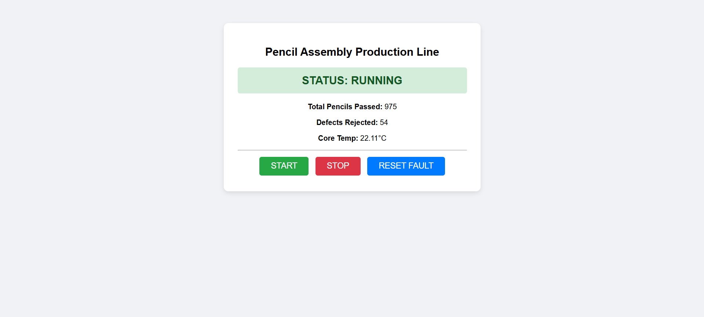

This project simulates an automated 4-stage industrial assembly pipeline designed for pencil manufacturing, tracking graphite core insertion, wooden body processing, eraser mounting, and ferrule crimping quality thresholds. Built as part of the Advanced Programming course at SRH University of Applied Sciences, the application utilizes a modular microservices architecture to process time-series assembly telemetry.
The system features a Python backend running an internal finite state machine to monitor machine cycles and sensor behaviors. If the system records three consecutive part defects, an automated safety lockdown rule instantly trips the production architecture into a FAULTED safe mode until an operator manually triggers a reset control action.
Data persistence is managed using an integrated InfluxDB time-series database container, which securely logs metrics like core production temperatures, state changes, total yields, and structural defects. These running telemetry streams are mapped straight into a Grafana visualization panel to monitor manufacturing efficiency metrics live.
Below is a preview of the active web-based Human Machine Interface (HMI) panel built to handle manual operator controls:
